We tackle the problem of generating a complete vector map representation from aerial imagery in a single run: producing polygons for all land-cover classes with shared boundaries and without gaps or overlaps. Existing polygonization methods are typically class-specific; extending them to multiple classes via per-class runs commonly leads to topological inconsistencies, such as duplicated edges, gaps, and overlaps. We formalize this new task as All-Class Polygonal Vectorization (ACPV) and release the first public benchmark, Deventer-512, with standardized metrics jointly evaluating semantic fidelity, geometric accuracy, vertex efficiency, per-class topological fidelity and global topological consistency. To realize ACPV, we propose ACPV-Net, a unified framework introducing a novel Semantically Supervised Conditioning (SSC) mechanism coupling semantic perception with geometric primitive generation, along with a topological reconstruction that enforces shared-edge consistency by design. While enforcing such strict topological constraints, ACPV-Net surpasses all class-specific baselines in polygon quality across classes on Deventer-512. It also applies to single-class polygonal vectorization without any architectural modification, achieving the best-reported results on WHU-Building.
ACPV-Net unifies semantically supervised conditioning and proposition-driven topological reconstruction: the former produces coherent semantic-geometric evidence through diffusion-based vertex generation under semantic supervision, the latter deterministically reconstructs a topology-consistent vector basemap via overdense PSLG construction and vertex-guided subset selection.
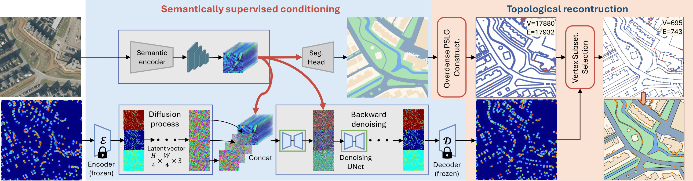
A challenging multi-class scene with complex geometry. ACPV-Net preserves class boundaries while maintaining seamless topology.
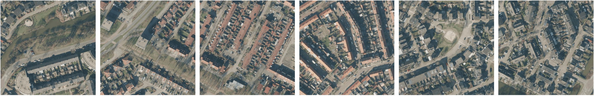
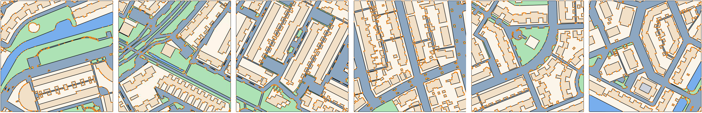
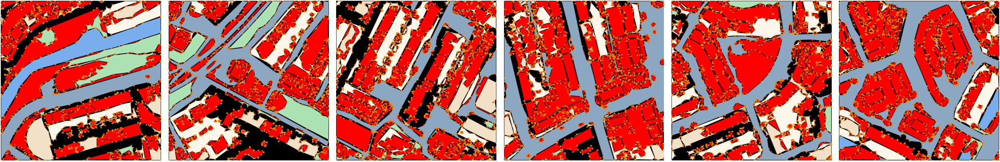
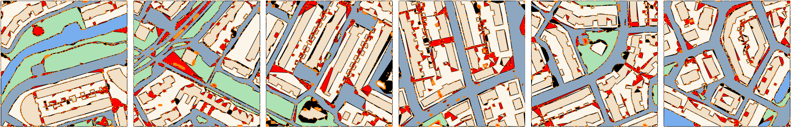
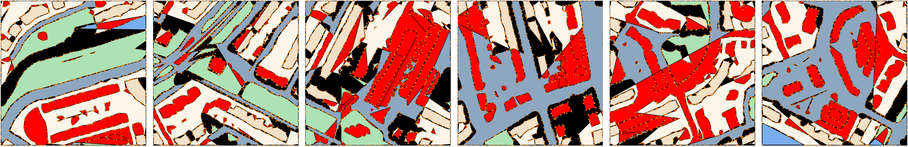
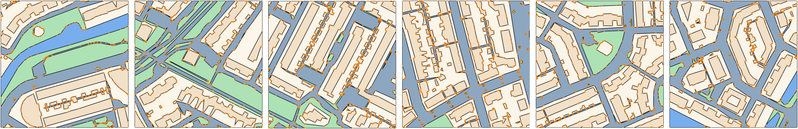
Thin and elongated structures are sensitive to topological breaks and vertex redundancy. ACPV-Net recovers these details while keeping polygons coherent.
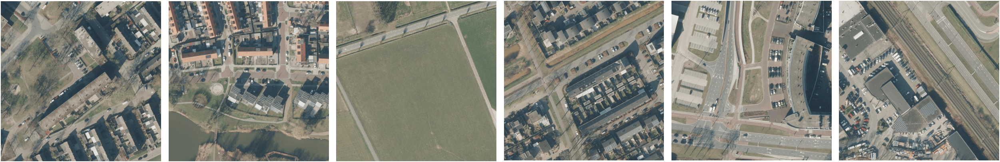
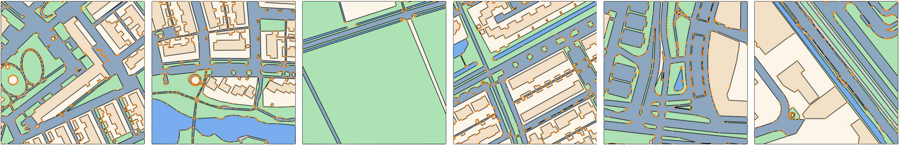
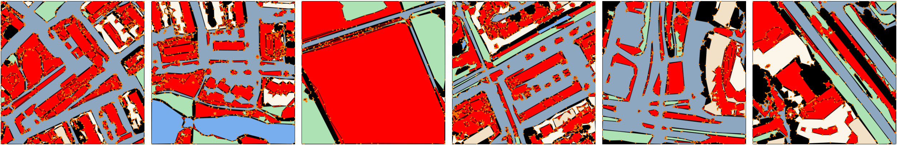
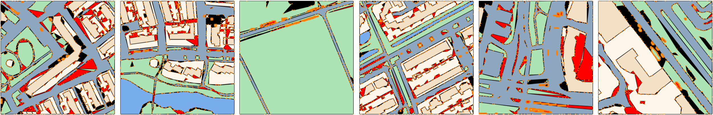
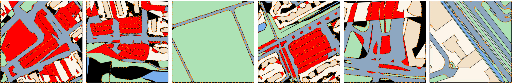
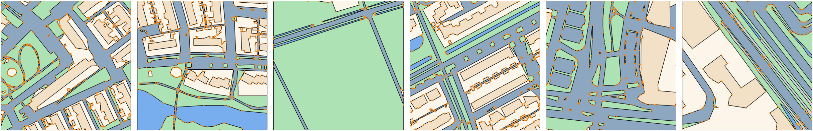
Under difficult appearance conditions, ACPV-Net still infers more consistent polygonal maps and shared boundaries than existing baselines.
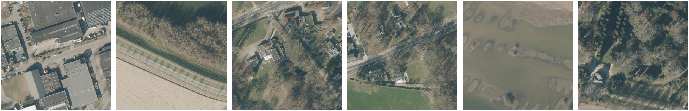
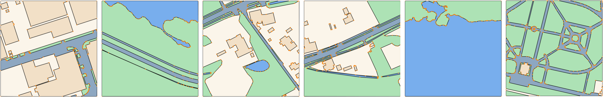
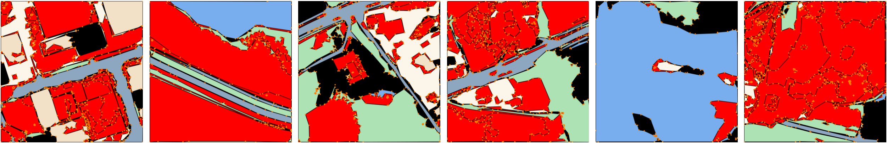
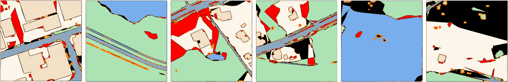
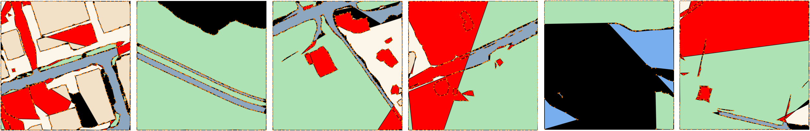
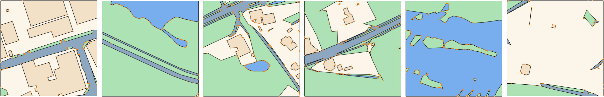
This publication is part of the project “Learning from old maps to create new ones”, with project number 19206 of the Open Technology Programme, which is financed by the Dutch Research Council (NWO), The Netherlands. We thank Prof. S.J. Oude Elberink, Geethanjali Anjanappa, Dr. Yaping Lin, and Dr. Abhisek Maiti for their support within the project, especially in data preparation and related research activities.
@misc{jiao2026acpvnetallclasspolygonalvectorization,
title={ACPV-Net: All-Class Polygonal Vectorization for Seamless Vector Map Generation from Aerial Imagery},
author={Weiqin Jiao and Hao Cheng and George Vosselman and Claudio Persello},
year={2026},
eprint={2603.16616},
archivePrefix={arXiv},
primaryClass={cs.CV},
url={https://arxiv.org/abs/2603.16616},
}
@inproceedings{jiao2026acpvnet,
title={ACPV-Net: All-Class Polygonal Vectorization for Seamless Vector Map Generation from Aerial Imagery},
author={Jiao, Weiqin and Cheng, Hao and Vosselman, George and Persello, Claudio},
booktitle={Proceedings of the IEEE/CVF Conference on Computer Vision and Pattern Recognition (CVPR)},
year={2026},
note={Accepted, camera-ready version pending}
}